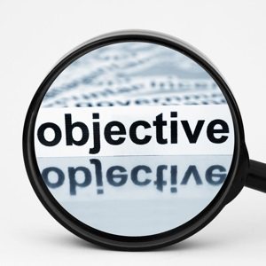

OBJECTIVES
Showcase the potential of the state of Punjab as a leading and preferred investment destination in the country
Build a brand equity of Punjab as the best place to invest in India
Provide a platform to investors for discovering business prospects and build alliances
Showcase the enterprising spirit and culture of Punjab
To facilitate investments in Punjab through focused industry interaction
PARTICIPANTS
Global Industry Leaders
Policy Makers
Industry Associations
Academicians
Entrepreneurs
Members from International Business and Financial Community
WHAT'S IN IT FOR YOU
Expanding business and investment frontiers
Identifying the key investment opportunities
Opportunity for backward and forward linkages
Experience sharing and interaction with Industry leaders
Country seminars with focus on bilateral investment opportunities
Experience the rich culture that Punjab has to offer
About Progressive Punjab
The “Progressive Punjab” campaign celebrates the spirit of Punjabi enterprise, openness, hard work and welcoming warmth for one and all. It shares the “Make in India” vision of our Hon’ble Prime Minister and positions Punjab and India as the easiest place to do business . The campaign entails taking steps in building efficient processes, eliminating administrative hurdles and enacting favorable policy initiatives. It aims to create high value jobs, build capacities and enforce a service-oriented culture in governance.